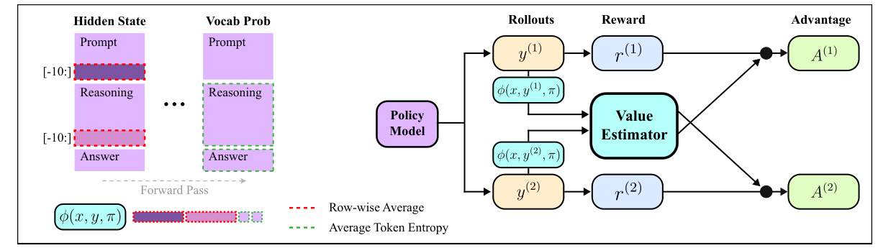

Your Language Model is Its Own Critic: Reinforcement Learning with Value Estimation from Actor's Internal States
NeurIPS 2026 Poster
Overview

Stable RL with verifiable rewards requires both reliable baselines and diverse training prompts. Group-based methods improve baseline estimates by sampling more responses per prompt, but this leaves fewer distinct prompts under a fixed rollout budget. POISE estimates baselines with a lightweight probe of the actor's hidden states and entropy, without a separate LLM-scale critic. Predicting each rollout's baseline from an independent rollout keeps the policy gradient unbiased with two rollouts per prompt. This allows greater prompt diversity and improves average performance and training stability over the evaluated baselines in multi-domain training.